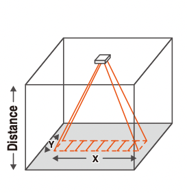
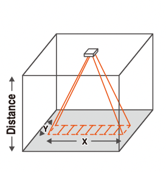
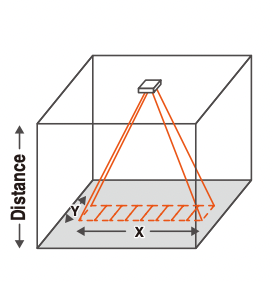

Background
Design Overview
Hardware
-
Temperature Sensor
The Omron D6T-8L-09 digital infrared thermometer was chosen for this project. This sensor works by continuously
detecting radiant infrared energy and computing a temperature value from this. This is much better for our
application than other non-contact thermometers like Pyroelectric sensors as they can only detect temperature
changes and will not output a continuous and accurate temperature reading.
The viewing angles of the sensor are respectively:
- X direction: 54.5°
- Y direction: 5.5°
 D6T-8L-09 Sensor

Viewing Angles
D6T-8L-09 Sensor

Viewing Angles
-
Servos
The next big challenge is given an x,y coordinate to move two servos; one for the x-axis and one for the y-axis to center
the temperature sensor on that given point.
The way the coordinates worked from the camera side is that the frame is divided by the number of pixels in it with these rules:
- The upper left corner is point (0,0)
- The lower right corner is point (320,240)
- The center of the frame is point (160,120)
The way the servos were implemented is that they are moved based off of a given duty cycle. The duty cycle values are arbitrary
with a value of 500 being at an angle of 0 (all the way left) by these rules:
- A value of 500 is an angle of 0° (all the way left)
- A value of 2500 is an angle of 180° (all the way right)
- A value of 1500 is an angle of 90° (centered)
When the program is started the servos are centered at 1500. A calculation is done to find the distance from the forehead coordinate
to the center of the frame in both the x and y direction:
- xdistance = foreheadx-coordinate - 160
- ydistance = foreheady-coordinate - 120
These absolute values for both x and y are checked if they are then within a margin of error. Through trial and error we found about
a 10x10 box that gave consistent results. This step is crucial as if there was no margin of error the servos would constantly overshoot
the centerpoint and oscillate back and forth over it.
If xdistance or ydistance is greater than the margin of error the servos are then moved either left/right or up/down in the direction
of the centerpoint.
The amount they moved was arbitrarily set to be a value of 5 which corresponds to ~5°. This process is then repeated
until the centerpoint is reached. Below is a visual representation of the frame and error box and a flowchart for the code.
Frame Representation
Flowchart
The Omron D6T-8L-09 digital infrared thermometer was chosen for this project. This sensor works by continuously detecting radiant infrared energy and computing a temperature value from this. This is much better for our application than other non-contact thermometers like Pyroelectric sensors as they can only detect temperature changes and will not output a continuous and accurate temperature reading.
The viewing angles of the sensor are respectively:
- X direction: 54.5°
- Y direction: 5.5°
D6T-8L-09 Sensor

Viewing Angles
The next big challenge is given an x,y coordinate to move two servos; one for the x-axis and one for the y-axis to center the temperature sensor on that given point.
The way the coordinates worked from the camera side is that the frame is divided by the number of pixels in it with these rules:
- The upper left corner is point (0,0)
- The lower right corner is point (320,240)
- The center of the frame is point (160,120)
The way the servos were implemented is that they are moved based off of a given duty cycle. The duty cycle values are arbitrary with a value of 500 being at an angle of 0 (all the way left) by these rules:
- A value of 500 is an angle of 0° (all the way left)
- A value of 2500 is an angle of 180° (all the way right)
- A value of 1500 is an angle of 90° (centered)
When the program is started the servos are centered at 1500. A calculation is done to find the distance from the forehead coordinate to the center of the frame in both the x and y direction:
- xdistance = foreheadx-coordinate - 160
- ydistance = foreheady-coordinate - 120
These absolute values for both x and y are checked if they are then within a margin of error. Through trial and error we found about a 10x10 box that gave consistent results. This step is crucial as if there was no margin of error the servos would constantly overshoot the centerpoint and oscillate back and forth over it. If xdistance or ydistance is greater than the margin of error the servos are then moved either left/right or up/down in the direction of the centerpoint.
The amount they moved was arbitrarily set to be a value of 5 which corresponds to ~5°. This process is then repeated until the centerpoint is reached. Below is a visual representation of the frame and error box and a flowchart for the code.
Frame Representation
Flowchart